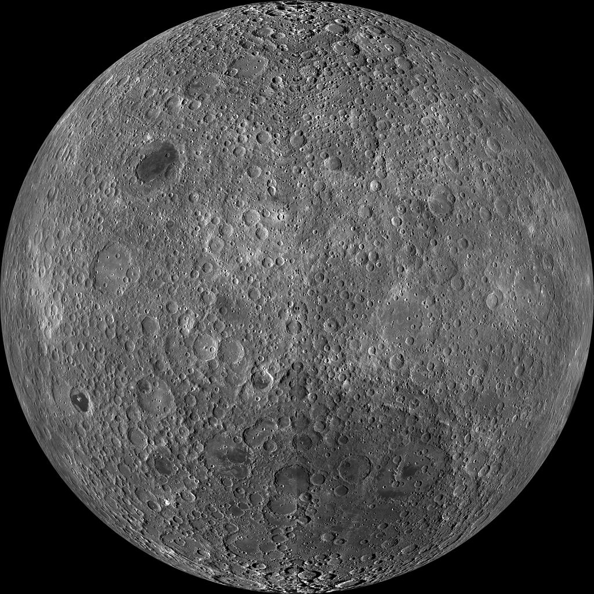
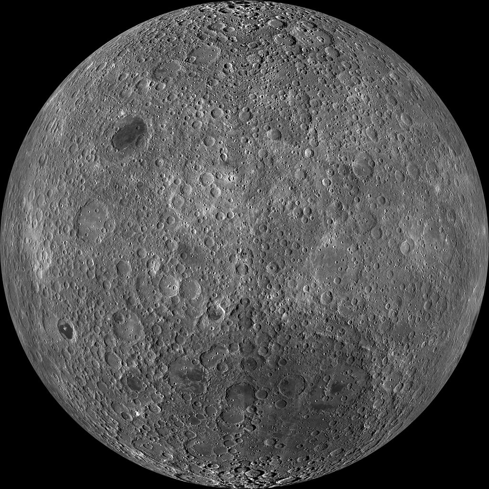

From Wikipedia, the free encyclopedia
This article is about Earth's natural satellite.
The Moon is an astronomical body orbiting Earth and is the planet's only natural satellite.It is the fifth-largest satellite in the Solar System, and by far the largest among planetary satellites relative to the size of the planet that it orbits. The Moon is, after Jupiter's satellite Io, the second-densest satellite in the Solar System among those whose densities are known.
|
The Moon is an astronomical body orbiting Earth and is the planet's only natural satellite.It is the fifth-largest satellite in the Solar System, and by far the largest among planetary satellites relative to the size of the planet that it orbits. The Moon is, after Jupiter's satellite Io, the second-densest satellite in the Solar System among those whose densities are known. The Moon is thought to have formed about 4.51 billion years ago, not long after Earth. The most widely accepted explanation is that the Moon formed from the debris left over after a giant impact between Earth and a hypothetical Mars-sized body called Theia. New research of Moon rocks, although not rejecting the Theia hypothesis, suggests that the Moon may be older than previously thought. |
The Moon is in synchronous rotation with Earth, and thus always shows the same side to Earth, the near side. Because of libration, slightly more than half (about 59%) of the total lunar surface can be viewed from Earth.The near side is marked by dark volcanic maria that fill the spaces between the bright ancient crustal highlands and the prominent impact craters. After the Sun, the Moon is the second-brightest celestial object regularly visible in Earth's sky. Its surface is actually dark, although compared to the night sky it appears very bright, with a reflectance just slightly higher than that of worn asphalt. Its gravitational influence produces the ocean tides, body tides, and the slight lengthening of the day. The Moon's average orbital distance is 384,402 km (238,856 mi) or 1.28 light-seconds. This is about thirty times the diameter of Earth. The Moon's apparent size in the sky is almost the same as that of the Sun, since the star is about 400 times the lunar distance and diameter. Therefore, the Moon covers the Sun nearly precisely during a total solar eclipse. This matching of apparent visual size will not continue in the far future because the Moon's distance from Earth is gradually increasing. |
The Moon was first reached by a human-made object in September 1959, when the Soviet Union's Luna 2, an uncrewed spacecraft, was intentionally crashed onto the lunar surface. This accomplishment was followed by the first successful soft landing on the Moon by Luna 9 in 1966. The United States' NASA Apollo program achieved the only human lunar missions to date, beginning with the first human orbital mission by Apollo 8 in 1968, and six human landings between 1969 and 1972, with the first being Apollo 11 in July 1969. These missions returned lunar rocks which have been used to develop a geological understanding of the Moon's origin, internal structure, and the Moon's later history. Since the 1972 Apollo 17 mission, the Moon has been visited only by un-crewed spacecraft. Both the Moon's natural prominence in the earthly sky and its regular cycle of phases as seen from Earth have provided cultural references and influences for human societies and cultures since time immemorial. Such cultural influences can be found in language, lunar calendar systems, art, and mythology. |
 
